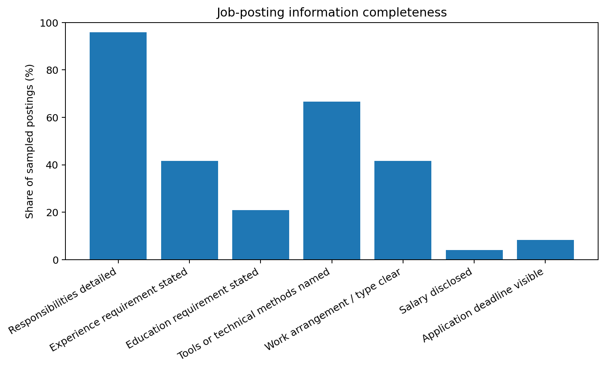

Job-posting data quality audit
A quality review of information completeness across the same 24 Pakistan analyst job advertisements, using a seven-field checklist, defect register, Five Whys root-cause analysis and corrective/preventive actions.
Audit objective
Determine whether a reasonable applicant receives enough structured information to understand the role, self-screen for eligibility, evaluate the employment arrangement and decide whether to apply. This is an operational and information-quality audit, not a software-testing project.
Audit framework
- Responsibilities detailed
- Experience requirement stated
- Education requirement stated
- Tools or technical methods named
- Work arrangement or employment type clear
- Salary disclosed
- Application deadline or open-until-filled status visible
Each field received 1 when visible and 0 when absent in the reviewed public source.
Completeness results

| Information field | Present | Rate | Quality interpretation |
|---|---|---|---|
| Responsibilities detailed | 23 of 24 | 96% | The strongest field. |
| Tools or technical methods named | 16 of 24 | 67% | Useful signal, but detail varies. |
| Experience requirement stated | 10 of 24 | 42% | Many applicants cannot self-screen confidently. |
| Work arrangement / type clear | 10 of 24 | 42% | City alone does not fully describe the arrangement. |
| Education requirement stated | 5 of 24 | 21% | Frequently absent or implicit. |
| Application deadline visible | 2 of 24 | 8% | Major process-clarity gap. |
| Salary disclosed | 1 of 24 | 4% | Major transparency gap. |
Defect and risk findings
- Salary not disclosed - Medium: weakens comparison and compensation transparency.
- Work arrangement unclear - Medium: location does not confirm on-site, hybrid or remote expectations.
- Experience threshold missing - Low: increases unsuitable or uncertain applications.
- Tools not specific - Medium: candidates cannot judge the operating environment.
- Closing date absent - Low: creates uncertainty about application urgency.
- Ambiguous titles - Medium: Research, Data, MIS, BI and Quality responsibilities often overlap.
Root-cause analysis
Problem: applicant-facing information is inconsistently structured across public job advertisements.
- Important fields are missing because advertisements use different formats.
- Formats differ because employers, recruiters and job boards use separate templates.
- Templates are not governed by a common applicant-information standard.
- Publishing focuses on attracting applications rather than measurable information quality.
- Ownership is fragmented across hiring managers, HR, recruiters and job platforms.
Corrective and preventive actions
- Add mandatory fields for salary, experience, education, work mode and closing status.
- Require hiring-manager approval of responsibilities, tools and essential/preferred requirements.
- Create a controlled job-family and title taxonomy.
- Introduce a pre-publication QA checklist.
- Audit a monthly sample and report completeness trends.
- Use “open until filled” when no fixed closing date exists.
Effectiveness measures
- 90% or greater completeness across mandatory applicant-facing fields.
- 100% of active postings show a deadline or approved open-until-filled status.
- Fewer applicant clarification questions.
- Reduced mismatch between applications and role requirements.
- No posting published with unresolved critical fields.
What this project demonstrates
- Defining measurable quality criteria before review.
- Auditing a sample consistently using binary evidence rules.
- Calculating field-level and overall completeness rates.
- Separating defects, risks, root causes and actions.
- Building CAPA recommendations with effectiveness measures.
Limitations
- This is a 24-posting portfolio sample, not a platform-wide compliance audit.
- Some sources show summarized job text rather than every original field.
- A field missing from the reviewed page may exist elsewhere in the application system.
- The audit does not test recruiter response, selection fairness or employer quality.
Selected public sources
- Indeed Pakistan - Research Analyst jobs
- Indeed Pakistan - Data Analyst jobs in Lahore
- Indeed Pakistan - Quality Analyst jobs
- LinkedIn Pakistan - Data Analytics jobs
- Limitless Incubators - Business Research Analyst
- ACE Money Transfer - Junior Commercial Data Analyst
- Burq - Data Analyst
- Brainlake - Data Quality Analyst
- NielsenIQ - Quality Associate Data OPS